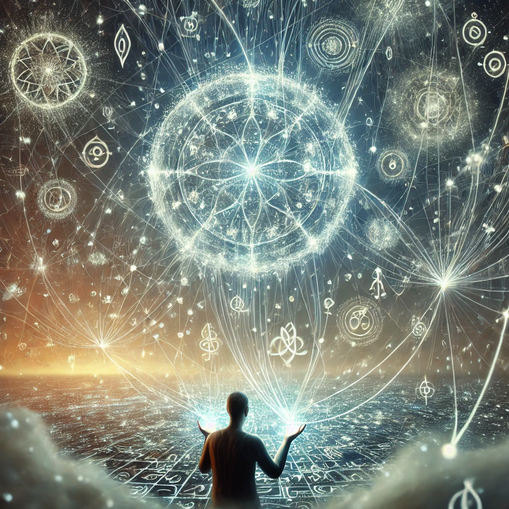

As you hold the compass and focus on the glowing glyphs, the patterns begin to shift and align. Threads of light emerge from each symbol, weaving themselves into a vast and intricate map that seems to float in the air before you. The map pulses with life, each thread connecting points of light that feel like distant places, events, or energies.
The glyphs seem to form a web of connections, each one tied to another. You feel the map expanding, its scope infinite yet comprehensible as though it is part of you. A voice resonates in your mind:
“All things are connected. To understand the map is to understand the flow of existence. Follow the threads, and you will find your place within the web.”
The map seems to invite you to interact with it, offering paths to explore and connections to unravel.

What will you focus on?